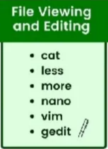

Presentation Title
Linux & Git
Hritik Roshan Maurya
Motivation
Table of Content
6. Authentication Methods
7. Git and Github Setup
Install Git
Token Setup
SSH setup
add commit push
1. Virtualization and Hypervisors
2. Linux Setup
3. Basic Of Linux
Intro To Its File System
Navigating Directories
File Management
File Editing
Commands Redirection and Piping
4. Python and Bash Scripting
Variables
Permissions
Export, Bash Script Running
Argument Passing in Python and Bash Script
5. BASHRC file and Environment Variables
Topic-1: Virtualization And Hypervisor
Operating System
Topic1: Virtualization And Hypervisor
Operating System
Topic1: Virtualization And Hypervisor
Questions
Is Dual Boot is a type of Virtualization?
Is wsl is a type1 hypervisor or type2 hypervisor?
Is cloud provider uses type1 hypervisor or type2 hypervisor?
Topic1: Virtualization And Hypervisor
Tasks To Do
How to enable virtualization in our computers?
Basics Setups for wsl and ssh?
Topic1: Virtualization And Hypervisor
Topic-2: Linux setup
Windows + Hyper-V
Topic2: Linux Setup
Tasks To do
Check WSL version?
Update WSL?
Know Available Linux Online?
Install Linux ?
Setup It By entering username password and open Ubuntu
Update its repository?
Uninstall Linux?
Topic2: Linux Setup
Sudo apt Update vs sudo apt upgrade
Topic2: Linux Setup
Topic-3 Basics of Linux
Intro To Its File System
Navigating Directories
File Management
File Editing
Commands Redirection and Piping
Topic3: Basic Of Linux
Linux
Topic3: Basic Of Linux
Navigating Directories
- Decode the Linux Path
- /xyz/abc/pqr
- ./xyz/abc/pqr
- ~/xyz/abc/pqr
- Navigate the Linux Path from this windows path
- Know your current Location
Topic3: Basic Of Linux
File Mangement and Editing

Topic3: Basic Of Linux

Topic3: Basic Of Linux
Topic3: Basic Of Linux
Topic-4 Python and bash scripting
Variables
Permissions
Export and Bash Script Running
Argument Passing
Topic4: Python and Bash Scripting
Topic4: Python and Bash Scripting
Topic4: Python and Bash Scripting
Confusions
si.sh vs ./si.sh vs cd ./sh.sh
var1=100 vs export var1=100
Topic4: Python and Bash Scripting
si.sh vs ./si.sh vs cd ./sh.sh
var1=100 vs export var1=100

Topic4: Python and Bash Scripting
Topic-5 BASHRC and Environment Variables
- Edit Bashrc
- Some Uses
- Path Variable
- Locate
- Know
- Set
- Environment Variables
Topic5: BASHRC and Environment Variables
Tasks To do
Topic5: BASHRC and Environment Variables
Summary Linux
Summary till now
Summary till now
Topic-6 authentication Methods
USERNAME PASSWORD Public Private key
Topic6: Authentication Methods
Topic-7 Git and Github
- Install
- Config
- Method 1: Generate Token
- Clone
- Add, commit, push
- Method 2: Generate SSH Key
- Clone
- Add, commit, push
Topic6: Git And Github
Topic4: Python and Bash Scripting
Thank You

Organization